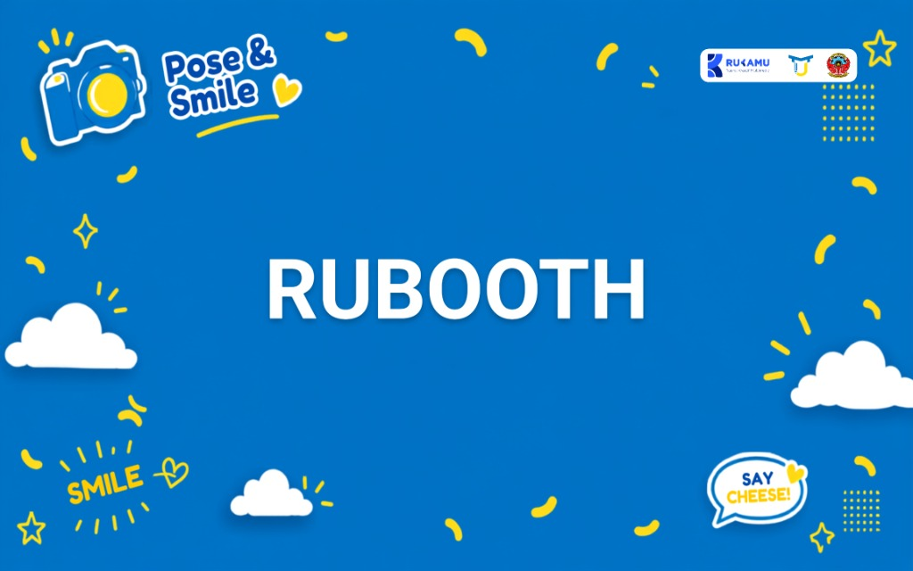

Dual-Camera USB PTP & UVC
Pratinjau langsung (*live view*) mulus via webcam USB UVC yang dipadukan dengan jepretan resolusi tinggi kamera DSLR Canon EOS melalui protokol USB PTP.
Lulusan Politeknik Negeri Ujung Pandang dengan IPK 3.74. Menekuni dua bidang secara seimbang: merancang infografis publikasi instansi (KPU Kota Makassar), identitas visual, kemasan, 3D, dan motion graphics sebagai Graphic Designer, serta membangun aplikasi dan sistem web fungsional pada bidang Software Development.
Arsip karya publikasi resmi instansi (KPU Kota Makassar), desain kemasan, identitas merek, ilustrasi vektor, video sinematik, dan animasi 3D.
Rekayasa perangkat lunak aplikasi mandiri, integrasi perangkat keras kamera & printer via USB, pembayaran QRIS otomatis, serta komputasi AI generatif.

Pratinjau langsung (*live view*) mulus via webcam USB UVC yang dipadukan dengan jepretan resolusi tinggi kamera DSLR Canon EOS melalui protokol USB PTP.
Pemrosesan komposisi gambar cerdas yang memungkinkan pengguna berfoto bersama figur idola secara otomatis langsung di layar kios.
Alur pembayaran nirsentuh (*cashless*) dengan pembuatan kode QR dinamis dan pembukaan kunci sesi foto otomatis begitu transaksi terverifikasi.
Sinkronisasi lampu studio pintar melalui Firebase Realtime Database serta antrean cetak otomatis ukuran 3R langsung ke printer foto Epson L8050.
Terbuka untuk kesempatan kerja penuh waktu, magang, maupun proyek kolaborasi di bidang Graphic Designer dan Software Development.